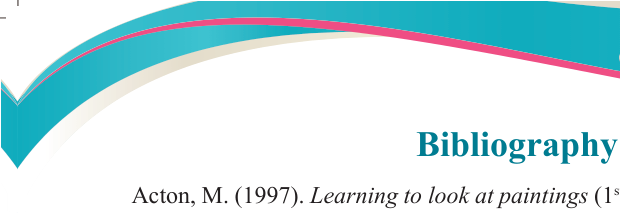
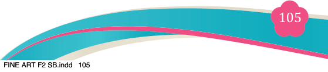

Fine Art for Secondary Schools

105


Student’s Book Form Two

Bibliography
Acton, M. (1997). Learning to look at paintings (1st ed.). Routledge.
Albert, G. (1991). Basic watercolour techniques. North light books.
Andrew, F. “Adobe photoshop CC classroom in a book® 2018 release.” iBooks.
Arthur C. D., & Bailey, W. S. (2000). Theories of art today, University of Wisconsin
Press.
Arthur C. D. G., & Bailey W. S. (2000) Theories of art today, University of
Wisconsin Press.
Bergdoll, B., & Dickerman, L. (2009). Bauhaus 1919-1933: Workshops for
modernity. The Museum of Modern Art.
Carroll, N. (Ed.). (2000). Theories of art today. University of Wisconsin Press.
Carroll, N (1994). “Identifying Art”. in Robert J. Yanal (ed.). Institutions of
Art: Reconsiderations of George Dickie’s Philosophy. Pennsylvania State
University Press.
Deinhard, H. (1970). Meaning and expression: toward sociology of art. Beacon
Press.
Dickie, G. (1997). A theory of art. Chicago spectrum press.
Dickie, G. (1971). Aesthetics, An introduction. Pegasus.
Gaut, B. (2004). ‘Art as a cluster concept’, in Noël Carroll (ed.), Theories of art today. Univ of Wisconsin Press.
Geeks for Geeks. (2021, August 17). How to use the rectangle tool in photoshop?
Retrieved September 22, 2022, from https://www.geeksforgeeks.org/how-
to-use-the- rectangle-tool-in-photoshop/?ref=rp https://www.geeksforgeeks.
org/how-to-use-the- rectangle-tool-in-photoshop/?ref=rp
Gilbert, R., & McCarter, W. (1988). Living with art: (2nd ed). Alfred A Knop, Inc.

04/08/2025 13:54